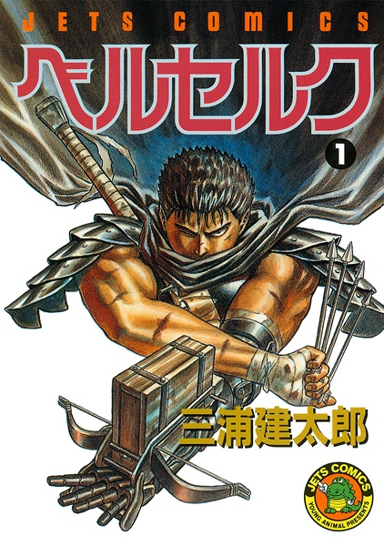

Berserk
Written and illustrated by the legend himself Kentarou Miura - Sensei.
Sypnosis
Guts, a former mercenary now known as the "Black Swordsman," is out for revenge.
After a tumultuous childhood, he finally finds someone he respects and believes he can trust,
only to have everything fall apart when this person takes away everything important to Guts for the purpose of fulfilling his own desires.
Now marked for death, Guts becomes condemned to a fate in which he is relentlessly pursued by demonic beings.
Setting out on a dreadful quest riddled with misfortune,
Guts, armed with a massive sword and monstrous strength, will let nothing stop him, not even death itself,
until he is finally able to take the head of the one who stripped him—and his loved one—of their humanity.

Vagabond
Written and illustrated by the amazingly talanted Takehiko Inoue - Sensei.
Sypnosis
In 16th century Japan, Shinmen Takezou is a wild, rough young man, in both his appearance and his actions.
His aggressive nature has won him the collective reproach and fear of his village, leading him and his best friend,
Matahachi Honiden, to run away in search of something grander than provincial life.
The pair enlist in the Toyotomi army, yearning for glory—but when the Toyotomi suffer a crushing defeat
at the hands of the Tokugawa Clan at the Battle of Sekigahara, the friends barely make it out alive.
After the two are separated, Shinmen returns home on a self-appointed mission to notify the Hon'iden family of Matahachi's survival.
He instead finds himself a wanted criminal, framed for his friend's supposed murder based on his history of violence.
Upon being captured, he is strung up on a tree and left to die.
An itinerant monk, the distinguished Takuan Soho, takes pity on the "devil child,"
secretly freeing Shinmen and christening him with a new name to avoid pursuit by the authorities: Musashi Miyamoto.
Vagabond is the fictitious retelling of the life of one of Japan's most renowned swordsmen,
the "Sword Saint" Musashi Miyamoto—his rise from a swordsman with no desire other than to become "Invincible Under the Heavens"
to an enlightened warrior who slowly learns of the importance of close friends, self-reflection, and life itself.
Jojo's Bizzare Adventure
Story and art by th one and only Hirohiko Araki
Sypnosis
The story of the Joestar family, who are possessed with intense psychic strength,
and the adventures each member encounters throughout their lives. Chronicles the struggles of the cursed Joestar bloodline
against the forces of evil. Each part follows the story of a protaganist carring the JoJo nickname.